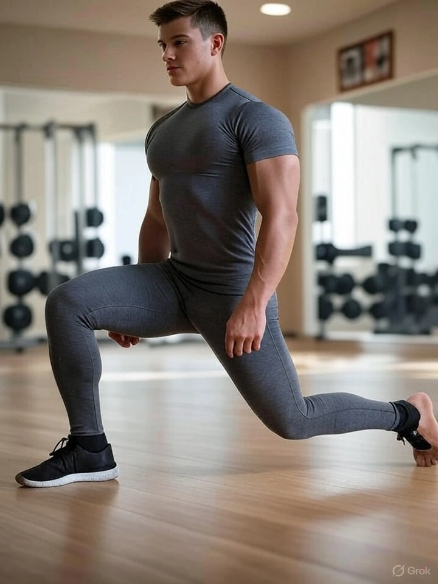
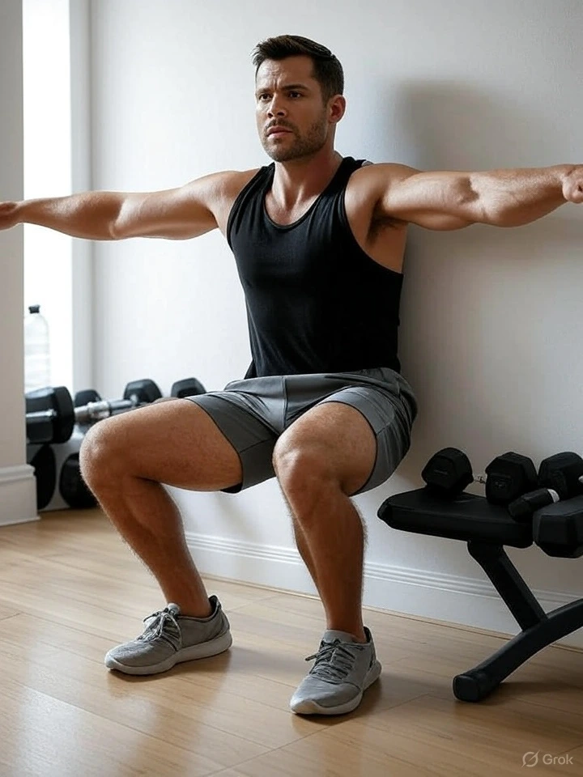

20-Minute Home Workout for Busy People to Stay Fit Daily
INTRODUCTION
A 20-minute home workout for busy people is no longer just a trend — it's a smart, time-saving solution for anyone who struggles to stay active in today’s fast-paced life. In our busy modern world, financial goals often take priority over physical and mental well-being. While success is important, true fulfillment comes from a healthy body and a clear mind. This guide is made for you if you feel too busy to focus on health. You’ll learn why short workouts are more powerful than you think, how to find your motivation, and get a science-backed routine that works for men and women — right from home. Let’s start building your daily movement habit today.
COMMON PROBLEMS BUSY PEOPLE FACE
1. Lack of Time: Work commitments, meetings, family responsibilities, social life, and constant phone usage make people feel they have no time. But the truth is, time isn’t lacking — prioritization is. We make time for what's important, and our body should top that list.
2. Mental Fatigue: After a long day of work and decisions, mental exhaustion takes over. People feel drained and think rest means skipping a workout. But research shows that a short movement session actually recharges your mind, helping you recover faster.
3. No Clear Plan: Even if someone overcomes time and motivation barriers, they often lack a clear, sustainable routine. They start with high motivation but burn out quickly. The brain craves ease, which is why discipline and a structured plan are key to success.
MEET REAL BUSY PEOPLE WHO WORK OUT
You don't need hours to get fit — and these real people prove it. They’ve used short workouts to stay healthy, even with packed schedules:
• Elon Musk – Despite managing Tesla, SpaceX, and more, he makes time
for 2–3 short sessions per week, proving that even the busiest people
can move.
• Michelle Obama – While serving the nation and parenting, she followed
a 30-minute daily routine and emphasized how exercise improved her
energy and mental clarity.
• Chris Hemsworth – Between filming and parenting, he uses quick home
workouts (10–15 minutes) with his fitness app "Centr" that focus on
total-body training.
• Ali Abdaal – Doctor-turned-YouTuber follows a minimalist approach with
20-minute bodyweight workouts using the "done is better than perfect"
mindset. These people aren’t superhuman — they’re just consistent.
FITNESS MYTHS THAT STOP BUSY PEOPLE
Many people fall into mental traps that delay their fitness journey. Let’s bust some myths:
Myth 1: "Spending at least an hour is necessary to see any real results" – Truth: You don’t need long hours. Studies show that short, intense workouts can be even more effective when done consistently.
Myth 2: "No gym = No results" – Truth: Your body is the best gym. Bodyweight workouts like squats and push-ups activate multiple muscles and improve strength and endurance.
Myth 3: "I’ll start when I’m free" – Truth: There will never be a perfect time. Start with 10 minutes and build consistency. Tiny consistent efforts today can lead to significant outcomes in the future.
Myth 4: "Missing a workout day means you've failed your routine." – Truth: Missing a day is normal. What matters is getting back the next day. Recovery is part of progress.
Myth 5: "You have to be in shape before you begin exercising" – Truth: Everyone starts as a beginner. You grow by doing, not by waiting to feel ready.
THE SCIENCE BEHIND SHORT WORKOUTS
Even if 20 minutes seems short, science supports its effectiveness. Here's why:
1. Triggers Fat Burn with HIIT Effect – High-Intensity Interval Training
(HIIT) helps burn calories fast and increases metabolism even after
you're done.
2. Hormonal Boost – Quick, intense workouts increase growth hormone,
testosterone, and endorphins, helping you gain lean muscle and feel
good.
3. Heart Health – Even 10–15 minutes of daily movement improves
cardiovascular function, controls blood sugar, and boosts
circulation.
4. Mental Clarity – Physical activity boosts serotonin and dopamine
levels, which sharpens focus and eases stress. This is vital for
professionals juggling work and family.
POWERFUL BENEFITS OF A 20-MINUTE DAILY WORKOUT
Common Benefits: Better heart function, Sharper focus and less anxiety, Faster metabolism, Stronger muscles and better endurance, Quality sleep.
Lesser-Known Benefits:
1. Improves Memory and Brain Plasticity – Short aerobic workouts increase oxygen-rich blood flow to the brain. This strengthens the brain’s ability to adapt and learn, improving memory, focus, and even decision-making over time.
2. Enhances Digestion and Gut Health – Gentle movement stimulates
intestinal contractions and balances gut microbiota. This supports
better nutrient absorption, reduces bloating, and strengthens the immune
system.
Fuel your workouts with a diet suited to your body type—check out our Nutrition Guide for Ecto, Meso & Endomorphs.
3. Slows Biological Aging – Exercise preserves telomere length — the DNA caps that shorten with age. People who work out regularly have younger biological cells, meaning a longer, healthier life.
4. Balances Hormones Naturally – In women, regular exercise can help manage estrogen levels, support thyroid function, and reduce PCOS symptoms. For men, it stabilizes testosterone and growth hormone — both important for energy and muscle.
5. Fights Emotional Eating and Overthinking – Movement releases mood-enhancing chemicals like dopamine and serotonin while reducing cortisol, the stress hormone. This curbs cravings, reduces binge tendencies, and calms the mind.
6. Boosts Posture and Core Awareness – Bodyweight training strengthens stabilizer muscles in the core and spine. This corrects posture, prevents back pain, and helps you move more confidently.
7. Protects Bones and Joints – Squats, lunges, and planks help strengthen bones and joints—even without using weights—making them especially valuable for older individuals and people with sedentary jobs.
8. Improves Sleep Cycles – A short workout, especially in the morning or early evening, regulates melatonin levels — the sleep hormone. It promotes quicker sleep onset and helps you wake up feeling more energized.
9. Boosts Productivity and Energy – Increased dopamine and oxygen flow after a workout supercharges brain function, helping you feel energized, focused, and in control for hours after exercising.
10. Builds a Stronger Mindset – Showing up for just 20 minutes daily helps you build self-discipline and confidence. It teaches you to follow through, overcome excuses, and create a strong identity around consistency.
FINDING YOUR PURPOSE IN EXERCISE
Knowing your purpose creates emotional commitment. Here's how to find yours:
1. Ask why deeply: Beyond weight loss, ask what really matters to you
(energy for your kids, freedom from pain, etc.)
2. Write it down: E.g., "I want to work out daily because I want to stay
active, happy, and mentally clear for my family."
3. Think long term: Where will your health be in 5 years if you don't
start today?
4. Feel-based goals: Instead of "Lose 5kg", go with "Feel light and
energized each morning."
Strengthen your mindset to stay consistent with our tips on Why Mental Fitness Is Key.
5. Love, not punishment: Exercise out of self-care, not guilt. You don’t need to be perfect. Just start.10 ESSENTIAL BODYWEIGHT WORKOUTS
All are equipment-free, suitable for both men and women, and scientifically proven to work:
1. Squats
Strengthens legs, hips, and core. Enhances balance and supports everyday movements like walking and climbing stairs.
2. Push-ups
Builds chest, shoulder, and triceps strength. Activates the core,
improves posture, and supports upper body function.
For a structured beginner plan using these moves, dive into our Simple Strength Training Routine.
3. Planks
Strengthens deep core muscles that protect your spine. Improves stamina while easing tension and discomfort in the lower back.
4. Lunges
Develops leg strength and improves single-leg balance. Reduces the risk of injury and supports joint mobility.
5. Jumping Jacks
Increases heart rate quickly, promotes coordination, and makes a great full-body cardio warm-up.
6. Mountain Climbers
Engages multiple muscle groups while improving cardiovascular endurance. Boosts agility and fat burn.
7. Glute Bridges
Activates glutes and hamstrings. Improves posture, relieves lower back pain, and enhances hip stability.
8. Wall Sit
Builds muscular endurance in the thighs and glutes. Strengthens the knees and stabilizes joints.
9. Superman Hold
Targets your lower back, glutes, and shoulders to build strength and stability. Improves posture and prevents back pain from long sitting.

10. High Knees
High knees are a powerful, low-equipment cardio exercise that boosts heart rate, improves coordination, and activates your core, quads, and calves. It’s a great fat-burning move that enhances speed and endurance — perfect for warm-ups or full HIIT circuits.
WEEKLY WORKOUT PLAN
Each day includes warm-up, 20–25 mins of training, and rest guidance. Designed to avoid injury and muscle soreness, with a balanced mix of cardio, strength, and recovery. Suitable for absolute beginners and working adults.
WHY THIS PLAN WORKS
• Saves time (20 minutes daily)
• Home-based with no equipment
• Full-body training that fits into any schedule
• Simple, effective, and science-backed
• Supports a healthy routine for working adults
Pair this plan with quality sleep for optimal results—read more in Why Quality Sleep Is Essential.
CONCLUSION
This routine is designed for busy individuals who want fast, effective results without spending hours. If you have more time, expand it. If not, these 20 minutes are more than enough. Remember, consistency beats intensity. You don’t need to wait to get fit. You just need to start. Build your lifestyle. Build your body. In just 20 minutes a day.
Frequently Asked Questions (FAQs)
1. Can a 20-minute quick exercise routine really improve my health?
Yes! A consistent 20-minute daily workout using bodyweight exercises or HIIT at home can improve heart health, metabolism, posture, and energy. It's a proven, time-saving fitness strategy that fits even the busiest schedules.
2. How do I build a daily movement habit if I work long hours?
Start small. Include short walks, office desk stretches, or light mobility drills between tasks. Consistency builds routine — even 5–10 minutes of movement per hour supports physical wellness and boosts mental clarity.
3. What's the best way to create a consistent training schedule for busy adults?
Use calendar blocks and pick the same time daily (like after waking or before dinner). Keep workouts short and effective using home-based routines, making it easy to follow through and build a healthy routine for working adults.
4. Are home workouts as effective as going to the gym?
Absolutely. HIIT at home and structured bodyweight training activate multiple muscle groups, improve endurance, and burn fat. Your body is the best gym when used with proper form and intensity.
5. How can I manage time for fitness while handling work and family?
Use time management for health: stack movement into your day (e.g., short morning workout + 5-min evening stretch). Consistency matters more than duration. Even a time-saving fitness plan builds long-term results.